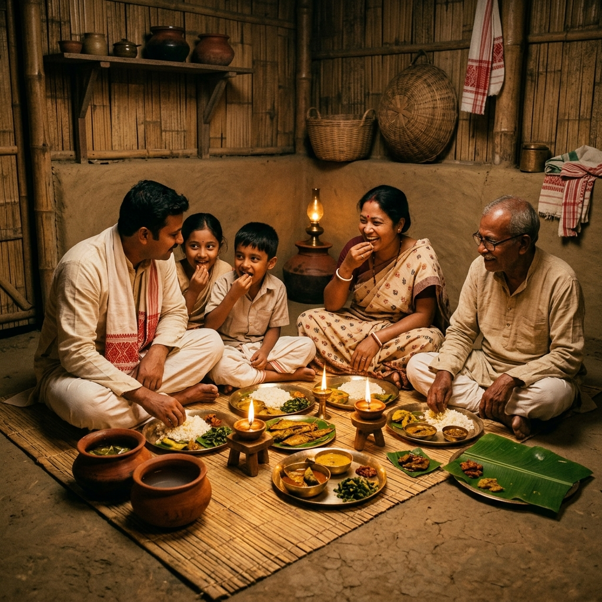
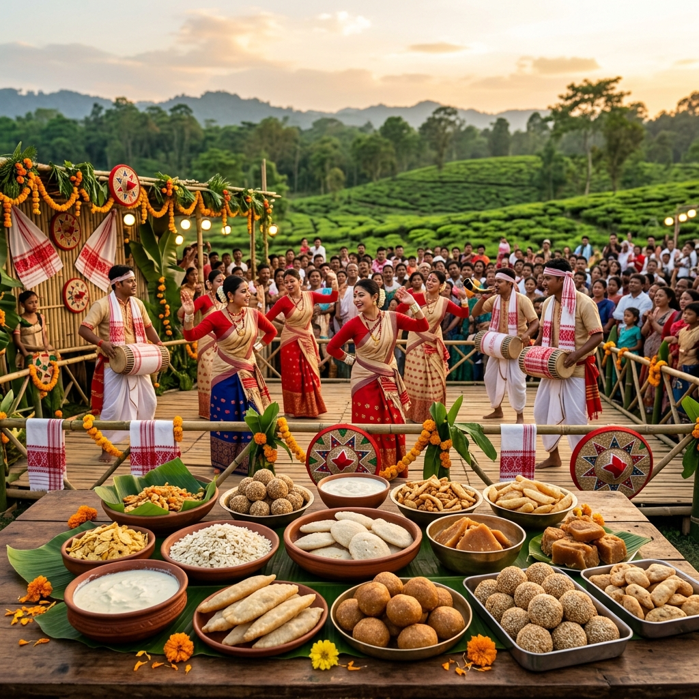

AAHAR was born from a simple yet profound belief — that the rich culinary traditions of Assam deserve a stage worthy of their depth and beauty. In the heart of Guwahati, our founder Chef Bhaskar Hazarika envisioned a place where the timeless flavours of his grandmother's kitchen could meet the world.
Growing up along the banks of the Brahmaputra, every meal was a ritual — fish freshly caught at dawn, vegetables from the family garden, rice from ancestral paddy fields, and spices ground on a sil-nora (traditional stone grinder). These memories became the blueprint for AAHAR.
Today, AAHAR stands as a bridge between generations — honouring the recipes passed down through centuries while ensuring they are not lost to the rapid currents of modern life. Every dish we serve is a love letter to Assam, written in the language of flavour.
We source directly from organic farms across the Brahmaputra valley, the hills of Karbi Anglong, and the tea gardens of upper Assam. Our rice comes from heritage paddy varieties, our fish from sustainable river sources, and our greens from local farmers who use no chemical pesticides.
We cook with bell metal utensils (kanh), clay pots, and bamboo hollows — the same vessels our ancestors used. Slow-cooking over firewood, steaming in banana leaves, and fermenting with age-old techniques are not just methods but acts of reverence for our culinary ancestors.
Every recipe we serve has a lineage — traced back to specific families, regions, and festivals of Assam. We work with cultural historians and elder home cooks to document and preserve recipes that are in danger of being forgotten, ensuring Assam's food heritage endures.
Assamese food culture is a reflection of the state's incredible biodiversity and the gentle temperament of its people. Unlike the intense spice profiles of many Indian cuisines, Assamese cooking is marked by its restraint — allowing the inherent flavours of fresh, local produce to sing.
The traditional Assamese meal is structured as a seven-course experience called Saaj, beginning with Khar (an alkaline dish made from banana stem ash), followed by Xaak (greens), Masor Tenga (sour fish curry), Mangxo (meat or lentils), and concluding with sweet Pitha and cooling Doi (yoghurt).
Fermented foods play a central role — from Khorisa (fermented bamboo shoot) to Pani Tenga (fermented rice water), the cuisine embraces probiotics long before the modern world discovered their benefits. Cooking with indigenous herbs like Manimuni, Bhedai Lota, and Dhekia (fiddlehead fern) makes every Assamese dish a pharmacy of nature's wisdom.

"Food is the most intimate form of cultural expression. At AAHAR, every plate is an invitation to experience the warmth, the history, and the soul of Assam."